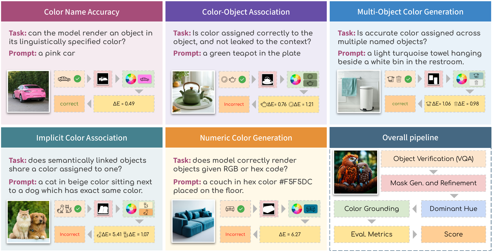
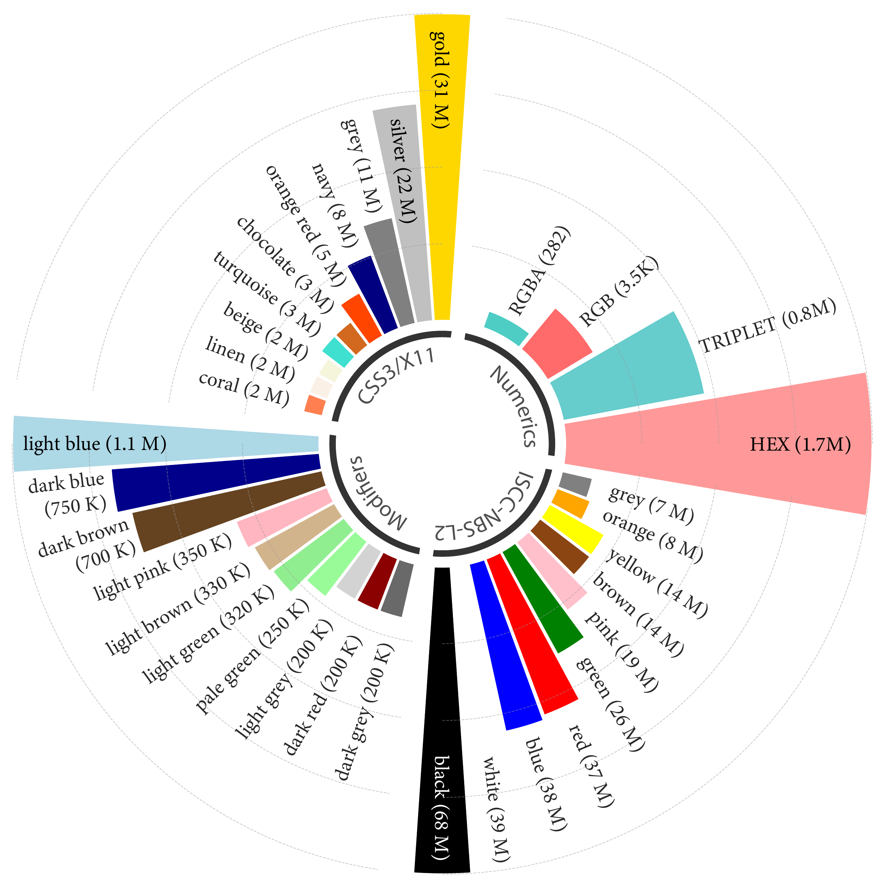
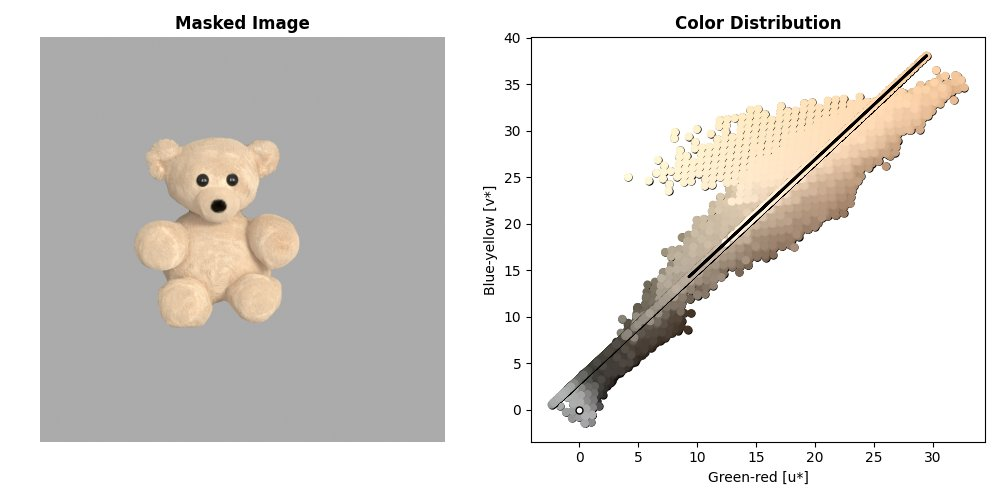
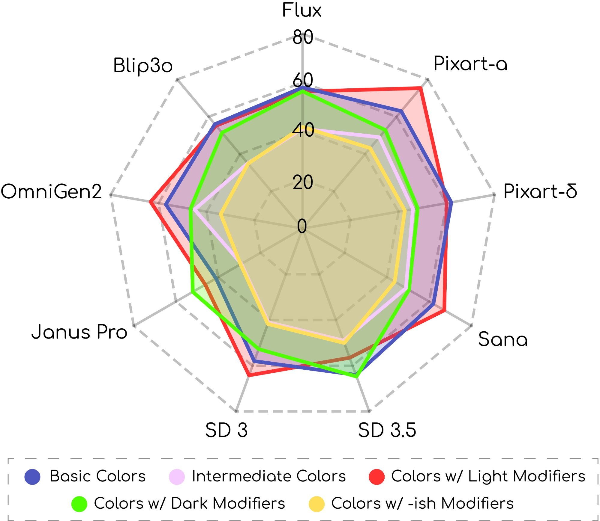
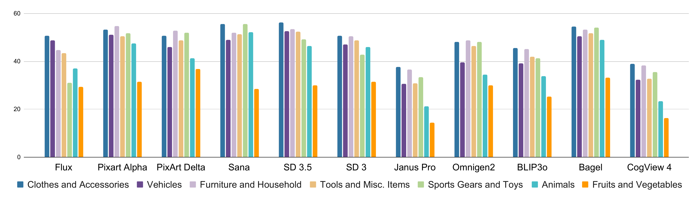
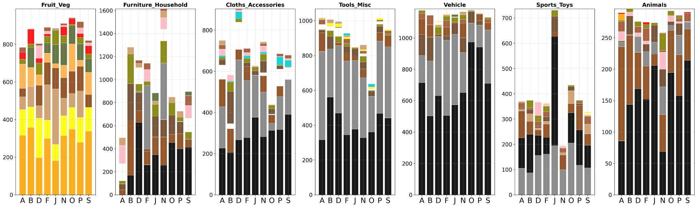

A Color Evaluation Benchmark for Text-to-Image Generation
Recent years have seen impressive advances in text-to-image generation, with image generative and unified models producing high-quality images from text. Yet these models still struggle with fine-grained color controllability, often failing to accurately match colors specified in text prompts. While existing benchmarks evaluate compositional reasoning and prompt adherence, none systematically assess color precision.
Color is fundamental to human visual perception and communication, critical for applications from art to design workflows requiring brand consistency. However, current benchmarks either neglect color or rely on coarse assessments, missing key capabilities such as interpreting RGB values or aligning with human expectations.
To this end, we propose GenColorBench, the first comprehensive benchmark for text-to-image color generation, grounded in established color systems like ISCC-NBS and CSS3/X11, including numerical colors which are absent elsewhere. With 44K+ color-focused prompts covering 400+ colors, it reveals models' true capabilities via perceptual and automated assessments. Evaluations of popular T2I models using GenColorBench show performance variations, highlighting which color conventions models understand best and identifying failure modes.
GenColorBench defines five evaluation tasks across three color systems, with an automated evaluation pipeline combining object detection, segmentation, and perceptual color metrics.

Our benchmark covers five color generation tasks: Color Name Accuracy (CNA), Color-Object Association (COA), Multi-Object Color Composition (MOC), Implicit Color Association (ICA), and Numeric Color Understanding (NCU). The evaluation pipeline uses VQA for object verification, GroundingDINO + SAM for mask generation, and CIEDE2000 (ΔE) in LAB space for color matching.
GenColorBench evaluates T2I models across five distinct color generation tasks, each probing different aspects of color understanding and generation.
GenColorBench is grounded in established color naming conventions with extensive coverage analysis across training data and evaluation tasks.

Analysis of color term frequencies in large-scale image-text datasets. The radial chart shows coverage across four color systems: ISCC-NBS L2 (basic + intermediate colors), CSS3/X11 (web-standard named colors), Modifiers (light/dark variants), and Numerics (RGB, HEX, TRIPLET specifications). Color frequency varies dramatically—from "black" (68M occurrences) to rare CSS colors like "linen" (2M).

We extract dominant object colors using the OneHue algorithm in CIE Luv color space. After segmenting the target object with SAM, we compute the dominant hue along the principal chromatic axis, providing robust color estimation even for textured or multi-colored objects.
The u*-v* scatter plot shows pixel color distribution with the dominant hue direction (black line) extracted via PCA on the chromatic components.
Comprehensive evaluation across state-of-the-art T2I models reveals significant variations in color generation capabilities.

Radar chart comparing model accuracy across five color categories: Basic Colors, Intermediate Colors, Colors with Light Modifiers (e.g., "light blue"), Dark Modifiers (e.g., "dark green"), and "-ish" Modifiers (e.g., "reddish"). Models show consistent performance on basic colors but struggle with modified color terms.

Per-category color generation accuracy across 11 T2I models. Performance varies significantly by object type—"Clothes and Accessories" prove challenging while "Fruits and Vegetables" with strong color priors are easier. FLUX and PixArt-α lead across most categories.

Distribution of generated colors per object category, revealing model-specific biases. "Animals" shows heavy bias toward brown/black tones across all models, while "Fruits and Vegetables" exhibits expected yellow/green dominance. Models vary in how strongly they follow category color priors vs. prompt specifications.
@article{butt2025gencolorbench,
author = {Butt, Muhammad Atif and Gomez-Villa, Alexandra and Wu, Tao
and Vazquez-Corral, Javier and Van De Weijer, Joost and Wang, Kai},
title = {GenColorBench: A Color Evaluation Benchmark for
Text-to-Image Generation Models},
journal = {arXiv preprint arXiv:2510.20586},
year = {2025},
}